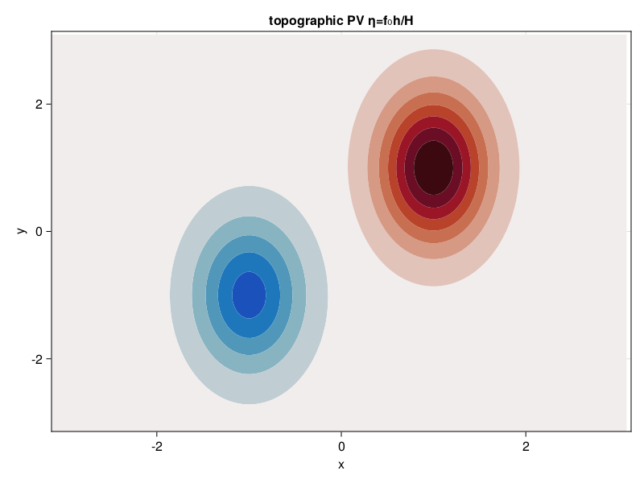
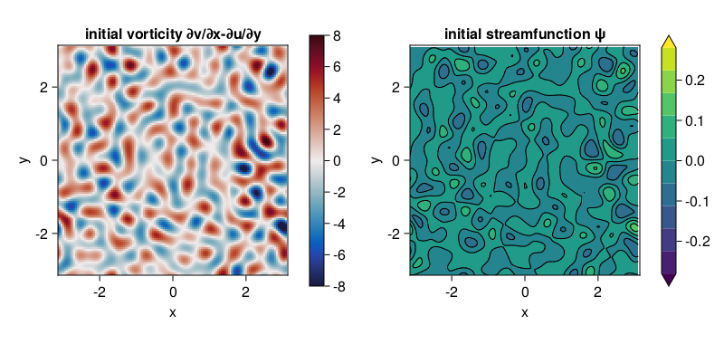

Decaying barotropic QG turbulence over topography
An example of decaying barotropic quasi-geostrophic turbulence over topography.
Install dependencies
First let's make sure we have all required packages installed.
using Pkg
pkg"add GeophysicalFlows, CairoMakie"Let's begin
Let's load GeophysicalFlows.jl and some other packages we need.
using GeophysicalFlows, CairoMakie, Printf, Random
using Statistics: meanChoosing a device: CPU or GPU
dev = CPU() # Device (CPU/GPU)Numerical parameters and time-stepping parameters
n = 128 # 2D resolution = n²
stepper = "FilteredRK4" # timestepper
dt = 0.05 # timestep
nsteps = 2000 # total number of time-steps
nsubs = 10 # number of time-steps for intermediate logging/plotting (nsteps must be multiple of nsubs)Physical parameters
L = 2π # domain sizeDefine the topographic potential vorticity, $\eta = f_0 h(x, y)/H$. The topography here is an elliptical mount at $(x, y) = (1, 1)$, and an elliptical depression at $(x, y) = (-1, -1)$.
σx, σy = 0.4, 0.8
topographicPV(x, y) = 3exp(-(x - 1)^2 / 2σx^2 - (y - 1)^2 / 2σy^2) - 2exp(- (x + 1)^2 / 2σx^2 - (y + 1)^2 / 2σy^2)Problem setup
We initialize a Problem by providing a set of keyword arguments. We use stepper = "FilteredRK4". Filtered timesteppers apply a wavenumber-filter at every time-step that removes enstrophy at high wavenumbers and, thereby, stabilize the problem, despite that we use the default viscosity coefficient ν=0. Thus, we choose not to do any dealiasing by providing aliased_fraction=0.
The topophic PV is prescribed via keyword argument eta.
prob = SingleLayerQG.Problem(dev; nx=n, Lx=L, eta=topographicPV,
dt, stepper, aliased_fraction=0)and define some shortcuts
sol, clock, vars, params, grid = prob.sol, prob.clock, prob.vars, prob.params, prob.grid
x, y = grid.x, grid.y
Lx, Ly = grid.Lx, grid.Lyand let's plot the topographic PV. Note that when plotting, we decorate the variable to be plotted with Array() to make sure it is brought back on the CPU when the variable lives on the GPU.
η = Array(params.eta)
fig = Figure()
ax = Axis(fig[1, 1];
xlabel = "x",
ylabel = "y",
title = "topographic PV η=f₀h/H",
limits = ((-Lx/2, Lx/2), (-Ly/2, Ly/2)))
contourf!(ax, x, y, η;
levels = collect(-3:0.4:3), colormap = :balance, colorrange = (-3, 3))
fig
Setting initial conditions
Our initial condition consist of a flow that has power only at wavenumbers with $6 < \frac{L}{2\pi} \sqrt{k_x^2 + k_y^2} < 12$ and initial energy $E_0$. device_array() function returns the array type appropriate for the device, i.e., Array for dev = CPU() and CuArray for dev = GPU().
E₀ = 0.04 # energy of initial condition
K = @. sqrt(grid.Krsq) # a 2D array with the total wavenumber
Random.seed!(1234)
qih = device_array(dev)(randn(Complex{eltype(grid)}, size(sol)))
@. qih = ifelse(K < 6 * 2π/L, 0, qih)
@. qih = ifelse(K > 12 * 2π/L, 0, qih)
qih *= sqrt(E₀ / SingleLayerQG.energy(qih, vars, params, grid)) # normalize qi to have energy E₀
qi = irfft(qih, grid.nx)
SingleLayerQG.set_q!(prob, qi)Let's plot the initial vorticity and streamfunction.
q = Observable(Array(vars.q))
ψ = Observable(Array(vars.ψ))
fig = Figure(resolution=(800, 380))
axis_kwargs = (xlabel = "x",
ylabel = "y",
aspect = 1,
limits = ((-Lx/2, Lx/2), (-Ly/2, Ly/2)))
title_q = Observable("initial vorticity ∂v/∂x-∂u/∂y")
axq = Axis(fig[1, 1]; title = title_q, axis_kwargs...)
title_ψ = Observable("initial streamfunction ψ")
axψ = Axis(fig[1, 3]; title = title_ψ, axis_kwargs...)
hm = heatmap!(axq, x, y, q;
colormap = :balance, colorrange = (-8, 8))
Colorbar(fig[1, 2], hm)
levels = collect(range(-0.28, stop=0.28, length=11))
hc = contourf!(axψ, x, y, ψ;
levels, colormap = :viridis, colorrange = (-0.28, 0.28),
extendlow = :auto, extendhigh = :auto)
contour!(axψ, x, y, ψ;
levels, color = :black)
Colorbar(fig[1, 4], hc)
fig
Diagnostics
Create Diagnostics – energy and enstrophy functions are imported at the top.
E = Diagnostic(SingleLayerQG.energy, prob; nsteps)
Z = Diagnostic(SingleLayerQG.enstrophy, prob; nsteps)
diags = [E, Z] # A list of Diagnostics types passed to "stepforward!" will be updated every timestep.Output
We choose folder for outputing .jld2 files.
filepath = "."
filename = joinpath(filepath, "decayingbetaturb.jld2")Do some basic file management,
if isfile(filename); rm(filename); endand then create Output.
get_sol(prob) = prob.sol # extracts the Fourier-transformed solution
out = Output(prob, filename, (:sol, get_sol))Visualizing the simulation
We modify the figure with the initial state slightly by adding the topography contours and mark the time in the title.
contour!(axq, x, y, η;
levels = collect(0.5:0.5:3), linewidth = 2, color = (:black, 0.5))
contour!(axq, x, y, η;
levels = collect(-2:0.5:-0.5), linewidth = 2, color = (:grey, 0.7), linestyle = :dash)
title_q[] = "vorticity, t=" * @sprintf("%.2f", clock.t)
title_ψ[] = "streamfunction ψ"
Time-stepping the Problem forward
We step the Problem forward in time.
startwalltime = time()
record(fig, "singlelayerqg_decaying_topography.mp4", 0:round(Int, nsteps/nsubs), framerate = 12) do j
if j % (1000 / nsubs) == 0
cfl = clock.dt * maximum([maximum(vars.u) / grid.dx, maximum(vars.v) / grid.dy])
log = @sprintf("step: %04d, t: %d, cfl: %.2f, E: %.4f, Q: %.4f, walltime: %.2f min",
clock.step, clock.t, cfl, E.data[E.i], Z.data[Z.i], (time()-startwalltime)/60)
println(log)
end
q[] = vars.q
ψ[] = vars.ψ
title_q[] = "vorticity, t="*@sprintf("%.2f", clock.t)
title_ψ[] = "streamfunction ψ"
stepforward!(prob, diags, nsubs)
SingleLayerQG.updatevars!(prob)
endstep: 0000, t: 0, cfl: 0.76, E: 0.0385, Q: 3.1410, walltime: 0.00 min
step: 1000, t: 50, cfl: 0.67, E: 0.0375, Q: 0.6276, walltime: 0.25 min
step: 2000, t: 100, cfl: 0.70, E: 0.0374, Q: 0.3566, walltime: 0.46 min
This page was generated using Literate.jl.